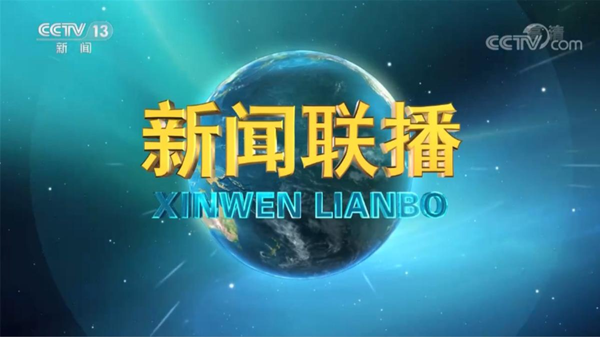
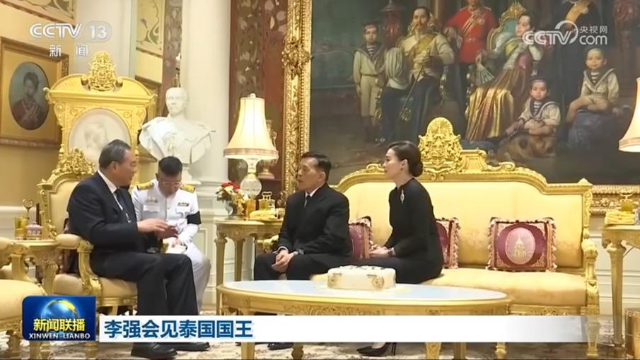
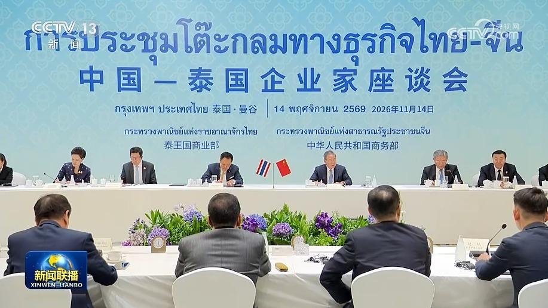
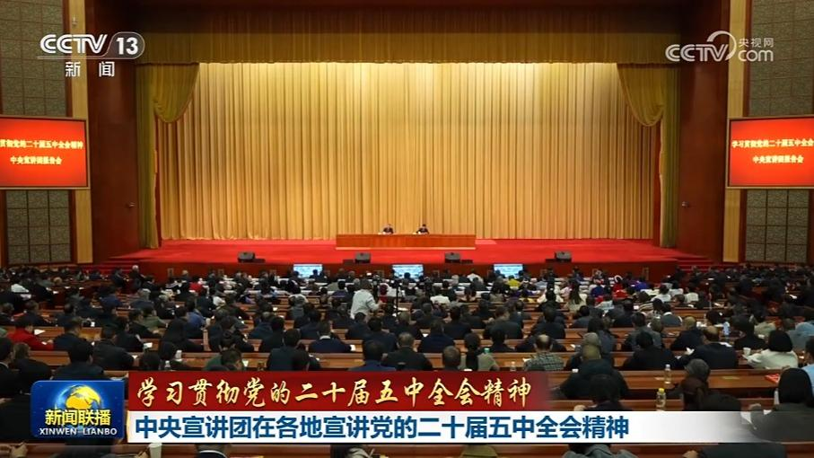
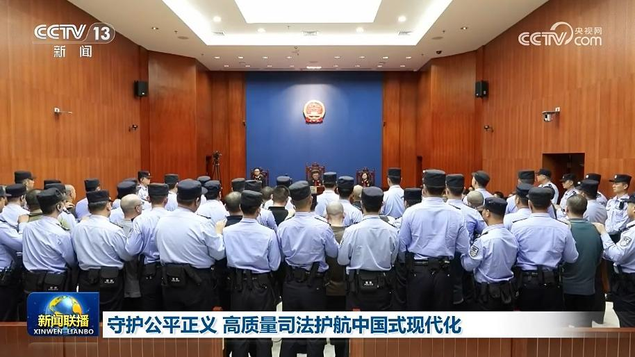
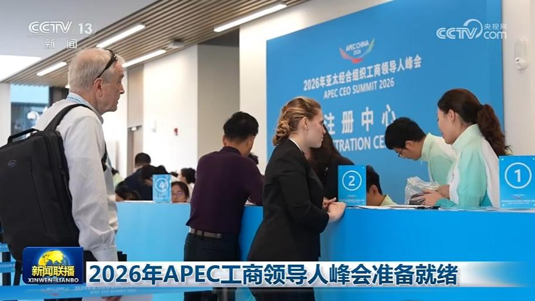
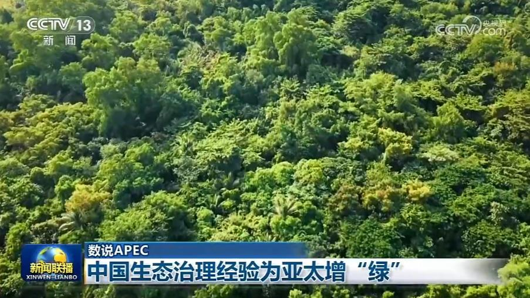
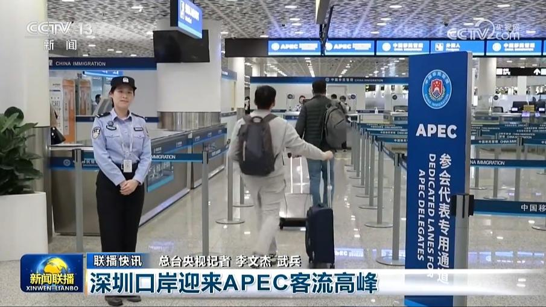
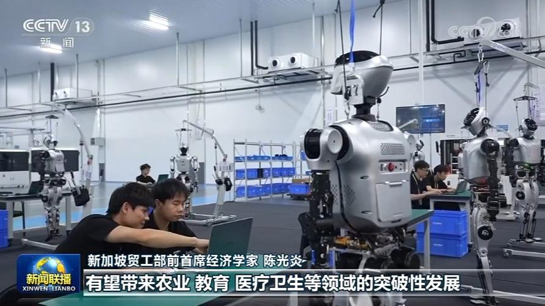
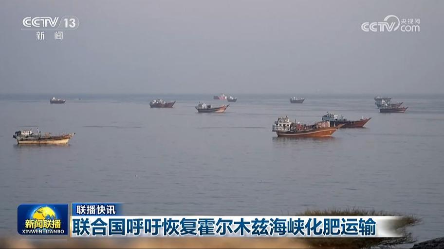

01
【建设亚太共同体 促进共同繁荣】共担时代责任 共促亚太发展
亚太经合组织是亚太地区层级最高、领域最广、影响力最大的经济合作机制。作为亚太大家庭一员，中国始终与区域伙伴共享机遇、协同发展。11月18日至19日，亚太经合组织第三十三次领导人非正式会议将在深圳举行。中方将同各方一道，汇聚各成员经济体的智慧与力量，共绘亚太繁荣新图景。

亚太经合组织是亚太地区层级最高、领域最广、影响力最大的经济合作机制。作为亚太大家庭一员，中国始终与区域伙伴共享机遇、协同发展。11月18日至19日，亚太经合组织第三十三次领导人非正式会议将在深圳举行。中方将同各方一道，汇聚各成员经济体的智慧与力量，共绘亚太繁荣新图景。
近日，中共中央印发了修订后的《中国共产党地方委员会工作条例》（以下简称《条例》），并发出通知，要求各地区各部门认真遵照执行。

11月14日，国务院总理李强在曼谷会见泰国国王哇集拉隆功。李强转达习近平主席对哇集拉隆功国王的亲切问候。李强表示，去年，国王陛下对中国进行国事访问，习近平主席同国王陛下举行会晤，就推进中泰命运共同体建设达成重要共识。中方赞赏泰国王室长期重视并致力于促进中泰友好。“中泰一家亲”，这是中泰关系的独特优势，体现在两国各领域务实成果，特别是当前动荡国际形势下，中泰经贸合作逆势增长，尤为难能可贵。……

11月14日，国务院总理李强在曼谷同泰国总理阿努廷共同出席中泰企业家座谈会。

连日来，学习贯彻党的二十届五中全会精神中央宣讲团成员在云南、辽宁、黑龙江宣讲，并与基层干部群众互动交流，推动全会精神走深走实。

公正司法是维护社会公平正义的最后一道防线。新时代以来，人民法院正在发生一场深刻变革——不再只是法庭上的定分止争，而是更深地嵌入国家治理、民生保障和高质量发展的肌理之中，以高质量司法护航中国式现代化。

记者从今天（11月15日）举行的2026年APEC工商界活动专题新闻发布会上了解到，2026年APEC工商领导人峰会将于11月17日—18日在深圳举行，目前各项筹备工作已就绪。

最新数据显示，中国近十年一直是全球森林面积年均净增长最多的国家。来自中国的生态治理经验，如今也在为亚太地区增“绿”。

今年1—10月全国期货市场累计成交额同比增长32.44%

多国人士表示，即将举行的亚太经合组织第三十三次领导人非正式会议是中国引领和推动亚太区域合作的一次重要会议，期待中国同亚太伙伴一道共享机遇、共迎挑战、共启发展繁荣新航程。

联合国呼吁恢复霍尔木兹海峡化肥运输